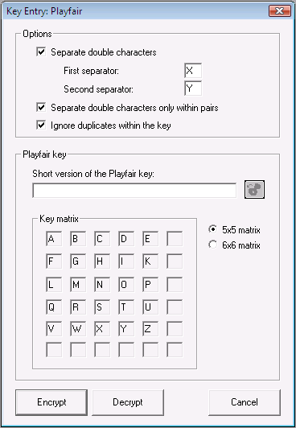

you can paste a key stored in
the key store (if there is no key to be pasted, the button is deactivated and
appears in gray).
you can paste a key stored in
the key store (if there is no key to be pasted, the button is deactivated and
appears in gray).You can reach this dialog via the menu entry Encrypt/Decrypt \ Symmetric(classic) \ Playfair.

If the option Separate duplicate letters is selected, successive identical characters are divided by a separator. By default, the first separator ist used. But if the letters to be separated are identical to the separator, then the second separator is used (for example "AA" is replaced with "AXA" and "XX" is replaced with "XYX", if "X" and "Y" are defined as separators).
If you select the option Separate duplicate letters only within pairs, duplicate letters are separated only if they form a pair (for example "CALLING" is replaced with "CALXLING", whereas "LOOP" is not changed at all).
The option Ignore duplicate letters in the key phrase affects the manner in which the password is entered in the matrix. If this option is enabled, duplicate letters in the password are simply ignored. Otherwise, in each case the next available letter in the alphabet is used.
You can enter the desired password into the field Short version of the Playfair key. With the
button you can paste a key stored in
the key store (if there is no key to be pasted, the button is deactivated and
appears in gray).
The 5x5 Matrix and 6x6 Matrix radio buttons are used to select whether the Playfair algorithm should be run with a 5x5 or a 6x6 matrix. (For further information, see explanation on the Playfair encryption algorithm.)
Use the Encrypt button to encrypt the current document with the desired key, use the Decrypt button to decrypt it.